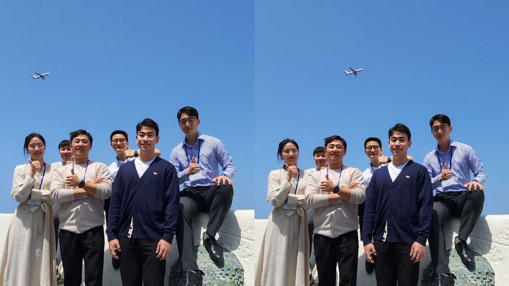
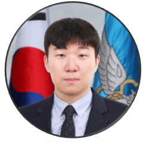
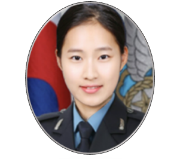
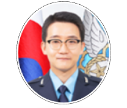

Research Group
Our group is made up of a highly engaged and collaborative researchers in flight, policy, aircraft and data analysis. The Group includes professor, officer in Airforce. We foster an environment where group members are treated equally, and where we respect and admire our differences
Now, we are studying various fields such as policy, Vertiport, Platform, Flight Route and Flight Training on new future transportation(UAM, RAM)

After graduating from the Department of Systems Engineering at the Air Force Academy(2012), he served as a fighter (F-5) pilot in the R.O.K Air Force.
▸ Presidential Air Guard Mission Planner (ROK AFOC)
▸ Flight Instructor (Air Force Academy)
▸ Completed the Ministry of Land, Infrastructure and Transport Aviation Safety Management SMS (Safety Management System) course
Field : Air Navigation, Regulation

After graduating from the Department of Machanical Engineering(Ph.D) at the KAIST(2020), he served as assistant professor in the R.O.K Air Force Academy.
▸ Machanical Engineering(Ph.D, M.S, B.S) at KAIST
▸ Post Doctor at KAIST Machine Research institue
▸ Lecturer(2015~2016), Assistant Professor(2016~) at Airforce Academy(Aerospace Engineering)
Field : Aircraft, hydrogen platform
After graduating from the Department of Systems Engineering at the Air Force Academy(2015), he served as Company commander, IT System Manager in the R.O.K MND and Air Force.
▸ Computer Engineering(M.S) Course at Korea Univ
▸ C4I System Configuration Manager(ROK OICG), System Maintenance Evaluator(ROK AFLC)
▸ MIMS System Manager at Ministry of National Defense
Field : Data Analysis, S/W

After graduating from the Department of Air Transportation and Logistics(M.A) at the Korea Aerospace Univ(2019), she served as professor(lecturer) in the R.O.K Air Force Academy.
▸ Air Traffic Logistics(M.A) at Korea Aerospace Univ
▸ Business Administration(B.A) at Airforce Academy (summa cum laude)
▸ Lecturer(2020~), Task Planner(2023~) at Airforce Academy(Aerospace Policy)
Field : Air Navigation, Regulation

After graduating from the Department of Aerospace Engineering(M.S) at the Konkuk Univ(2021), he served as professor(lecturer) in the R.O.K Air Force Academy.
▸ Aerospace Engineering(Ph.D) Course at Konkuk Univ
▸ Aerospace Engineering(M.S, B.S) at Konkuk Univ
▸ Lecturer(2022~) at Airforce Academy(Aerospace Engineering)
Field : Aircraft, Pilot Training
After graduating from the Department of Computer Engineering at the Air Force Academy(2019), he served as Cyber Threat Analyst, IT System Manager in the R.O.K MND and Air Force.
▸ Information Security(M.S) at Sungkyunkwan Univ
▸ System Link Manager(ROK OICG)
▸ Cyber Threat Analyst at Ministry of National Defense
Field : Data Analysis, S/W